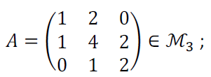
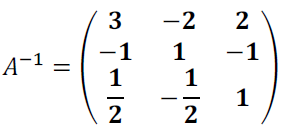

Soit la matrice :
déterminer sa matrice inverse A-1 en appliquant successivement les 5 opérations élémentaires :
L2 ← L2 - L1 , L2 ← 0.5L2 , L3 ← L3 - L2 , L2 ← L2 - L3 et L1 ← L1 - 2L2
| 1 2 0 1 4 2 0 1 2 |
1 0 0 0 1 0 0 0 1 |
| 1 2 0 0 2 2 0 1 2 |
1 0 0 -1 1 0 0 0 1 |
| 1 2 0 0 1 1 0 1 2 |
1 0 0 -½ ½ 0 0 0 1 |
| 1 2 0 0 1 1 0 0 1 |
1 0 0 -½ ½ 0 ½ -½ 1 |
| 1 2 0 0 1 0 0 0 1 |
1 0 0 -1 1 -1 ½ -½ 1 |
| 1 0 0 0 1 0 0 0 1 |
3 -2 2 -1 1 -1 ½ -½ 1 |
Soit la matrice inverse :
